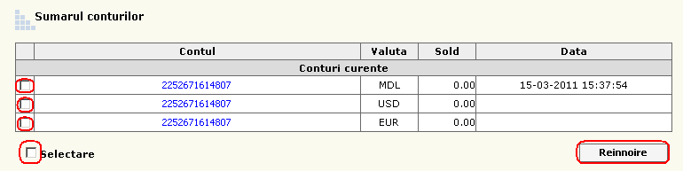
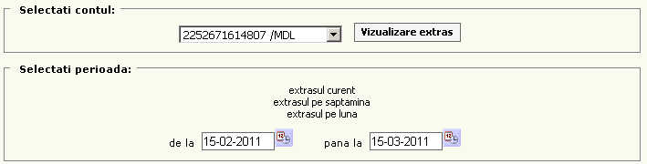

Conturi
Conturi
Numărul contului, Valuta în care se efectuează transferurile şi Soldul curent pentru fiecare cont în parte, Data ultimei reînnoiri a informaţiei.
Pentru a reînnoi informaţia despre conturi, selectati din stînga conturile şi apăsati butonul reînnoire.
Pentru a vizualiza un extras cu toată informaţia despre contul curent precum ca transferurile
efectuate şi detaliile acestora, apăsaţi numărul contului dorit.

Extrase
Meniul extrase oferă posibilitatea de a primi toată informaţia despre un cont selectat pe un extras aparte, care poate fi uşor imprimat.
Pentru aceasta selectati contul necesar din meniul cascadă, selectaţi perioada extrasului dorit (extrasul curent/pe săptămînă/pe lună, sau indicăm perioada necesară mai jos) şi apăsati tasta Vizualizare extras.

Rechizite bancare
Aici este afişată informaţia necesară pentru efectuarea transferurilor.
Rechizitele bancare pentru primirea mijloacelor banesti pe teritoriul Republicii Moldova şi pentru primirea mijloacelor banesti de peste hotare in valuta straina. La fel este posibil de a primi banii fără deschiderea contului curent.
Daca la moment nu aveti deschis cont curent, pentru a ridica banii transferati de peste hotare e nevoie doar sa indicati codul personal din pasaport (in loc de numarul contului).